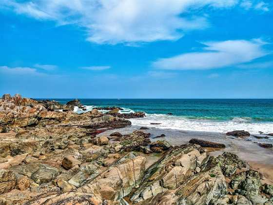
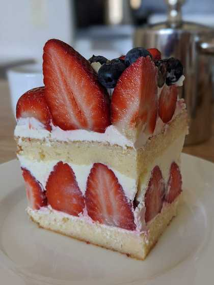

お店の由来と想い
スイーツナチュールは、ザ・ウィンザーホテル洞爺リゾート&スパで働いていた川村拓也さんが、2021年10月に伊達市大町で開いた洋菓子店です。開店前の新聞記事では、地元の果物を生かした洋菓子の店として紹介されています。
Instagramのプロフィールでは、道産の食材にこだわったケーキのほか、焼き菓子・クッキー・クロワッサンなどが案内されています。店名の意味は確認できていないため、ここでは触れません。
情報源: 室蘭民報(2021年9月7日) / Instagram



メニュー
確認できた範囲では、ケーキ、焼き菓子、クッキー、クロワッサン、マカロンなどが案内されています。品目・価格・営業時間は準備中です。最新情報はInstagramでご確認ください。

ケーキ
詳細は準備中

タルト(イメージ)
詳細は準備中

焼き菓子・クッキー
詳細は準備中

マカロン
詳細は準備中


口コミ(イメージ例)
以下は制作側が作成した創作の文章で、実際のお客様の声ではありません。
イメージ例
道産の素材を使ったケーキと聞いて立ち寄りました。素材の味が分かる、やさしい甘さでした。
イメージ例
手みやげに焼き菓子を選びました。箱を開けたときの香りがよく、家族にも好評でした。
イメージ例
ショーケースを眺めながら選ぶ時間が楽しいお店です。売り切れもあるので、早めに行くのがおすすめです。
アクセス・ご案内
| 所在地 | 〒052-0027 北海道伊達市大町3-2 |
|---|---|
| 電話 | 準備中 |
| 営業時間 | 準備中 |
| 定休日 | 準備中 |
| @sweets_nature_kawamura |
掲載写真はフリー素材のイメージで、店舗の実際の商品・店内ではありません。
写真は縮小・切り抜きなどの加工をしています。写真のライセンスについて(クリエイティブ・コモンズ)